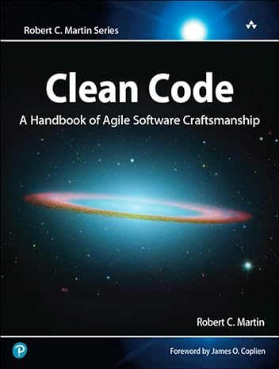

Clean Code
Author: Robert C.Martin
genre: Science
Price: $10.99
genre: Science
Price: $10.99
Description: Clean Code" by Robert C. Martin serves as a guiding light for developers, illuminating the path toward creating software that not only functions flawlessly but is also a joy to work with. Its principles echo the essence of craftsmanship in coding, advocating for practices that prioritize human understanding over machine execution. Through a myriad of examples and real-world scenarios, the book underscores the importance of code readability and comprehension, emphasizing that code is read far more often than it's written.
One of the foundational elements highlighted in the book is the art of naming—choosing descriptive, meaningful names for variables, functions, and classes. This clarity in naming fosters understanding, making the code self-explanatory. Additionally, the book emphasizes the creation of concise, focused functions that carry out singular tasks effectively. This approach not only aids in comprehension but also facilitates code maintenance and modification.
Moreover, "Clean Code" stresses the significance of continuous refinement through refactoring. It encourages developers to regularly revisit and improve their codebase, eliminating redundancies, simplifying intricate logic, and ensuring alignment with industry best practices. This commitment to ongoing enhancement fosters code that remains adaptable, resilient, and of superior quality.
In essence, "Clean Code" encapsulates a philosophy—a mindset that elevates software development into an art form. By adhering to its principles of clarity, simplicity, and continual improvement, developers can sculpt code that stands the test of time, embodying excellence and craftsmanship in every line.